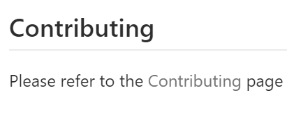
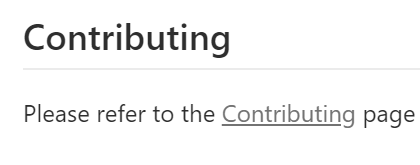

The default GitHub.com theme is not very colorblind friendly because it is hard to distinguish hyperlinks from normal text. I’m using GitHub as an example because I use that site a lot, but I see the same issue all over the web.
For example, the following image is from a GitHub.com repo. The word “Contributing” is a link.

This is how a colorblind person sees the same thing:

As you may or may not be able to tell, it is hard to distinguish that Contributing is a link. Imagine if you are trying to scan a large doc for a link - it’s kind of like looking for a needle in a haystack.
This issue has been bugging me for a longtime and last month I decided to figure something out. I was in a rush to check a ton of links on a GitHub repo and it was taking me forever to find them.
So, I took to Twitter with this:
Will a user-defined !important CSS hack get you closer to where you want to be? https://t.co/NQmhd5FhCi
— Noel Bundick (@acanthamoeba) December 5, 2018
Noel pointed me to that site which showed me how to use the Stylish Chrome Extension - which allows you to define a custom style that is applied to every website you visit. (You can also select specific sites the style applies to)
Some people reported that Stylish collects your browsing history. You should read their privacy policy. It states that they do collect data, but nothing that ties it back to you personally. You can go into Stylish settings and uncheck “Send de-identified browsing data…” which prevents the data grab that people reported. If this is off putting or you are concerned with this, then you should try Stylus, which is a fork of the Stylish codebase with all the analytics code removed. You can’t as easily manage styles, but it may set you at ease knowing it is not collecting any data.
I have included instructions below that show you how to set this up with Stylus.
The only logical thing I could think of was to underline all links so they all pop out of the page.
I created this Stylish style: Always Underline Links
Which has this CSS:
a
{
text-decoration: underline !important;
}
So, now here’s what that same section looks like with the “Always Underline Links” style applied.

This has been super helpful for me over the last couple of months. I haven’t struggled at all to find links on a text heavy site.
Step by Step Instructions to Always Underline Links with Stylish
- Install the Stylish Chrome Extension
- Install the “Always Underline Links” Style
- Visit websites and enjoy the underlined links.
Step by Step Instructions to Always Underline Links with Stylus
- Install the Stylus Chrome Extension
- Right-click on extension icon and select “Open Style Manager”
- Click “Write new style”
- Copy the following code into the code text box:
a
{
text-decoration: underline !important;
}
- Click Save
- Visit websites and enjoy the underlined links.
BTW - I’m using this Colorblind Chrome Extension to render websites in all the colorblind variants.
Definitely checkout this podcast: Regine Gilbert on the Essence of Accessibility for a great accessibility discussion. It’s what actually motivated me to show you all my always underline solution.
Hope this helps you as well.
Jon